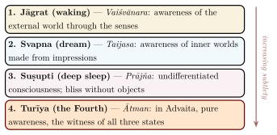
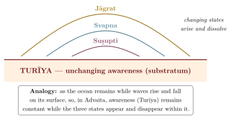

Chapter 10: States of Consciousness: From Waking to Turīya¶
10.1 Introduction: Consciousness as the Central Problem¶
The analysis of the states of consciousness is one of the most distinctive contributions of the Upaniṣads. Western philosophers from Aristotle to Descartes also reflected on dreaming, but mainly as a problem for knowledge of the external world; the Upaniṣadic teachers instead made the comparison of waking, dream and deep sleep into a method for discovering the nature of the self, and posited a further state beyond all three.
The principal texts for this analysis are the Māṇḍūkya Upaniṣad (with Gauḍapāda’s Kārikā), the Bṛhadāraṇyaka Upaniṣad (particularly Yājñavalkya’s teachings in 4.3), the Chāndogya (8.7–12) and the Praśna Upaniṣad (Question 4). The Māṇḍūkya’s own text, its correlation of the states with the syllable Oṃ, and Gauḍapāda’s arguments are set out in Section 3.2; this chapter examines each state in turn. The systematic interpretation that follows is largely that of Advaita, whose teachers did most to develop it; where the theistic schools differ, this is noted.
10.2 The Four States: An Overview¶
Figure 10.1 arranges the four states in ascending order of subtlety, from waking to Turīya.

10.3 Jāgrat: The Waking State¶
10.3.1 Description¶
In the waking state (jāgrat), consciousness is directed outward through the sense organs (indriyas) towards the objects of the external world. The self in this state is called Vaiśvānara (“relating to all people”), because this state is common to all beings; later Advaita correlates it with the gross body (sthūla śarīra).
The Māṇḍūkya Upaniṣad describes Vaiśvānara as having “seven limbs and nineteen mouths” (Table 10.1).
| Attribute | Interpretation |
|---|---|
| Seven Limbs | Heaven (head), Sun (eye), Air (breath), Space (torso), Water (bladder), Earth (feet), Fire (mouth) — the cosmic Vaiśvānara of Chāndogya 5.18.2, to which Śaṅkara refers |
| Nineteen Mouths | 5 sense organs + 5 organs of action + 5 vital breaths + mind + intellect + ego + citta = 19 instruments of experience (Śaṅkara’s explanation) |
10.3.2 Philosophical Significance¶
The waking state, though the most familiar, is not treated as privileged. Yājñavalkya pictures the self moving between waking and dream “as a great fish moves along both banks of a river” (Bṛhadāraṇyaka 4.3.18). Gauḍapāda later went much further, arguing that waking experience shares the essential characteristics of dream — subject-object duality, dependence on time, and eventual sublation (see Section 3.2.5).
10.4 Svapna: The Dream State¶
10.4.1 Yājñavalkya’s Analysis of Dream¶
Yājñavalkya’s analysis of the dream state in the Bṛhadāraṇyaka Upaniṣad (4.3.9–14) is the fullest in the Upaniṣads:
na tatra rathā na rathayogā na panthāno bhavanti / atha rathān rathayogān pathaḥ sṛjate / na tatrānandā mudaḥ pramudo bhavanti / athānandān mudaḥ pramudaḥ sṛjate
Translation: “There are no chariots there, no yokes, no roads — but he creates chariots, yokes, and roads. There are no joys, delights, or pleasures there — but he creates joys, delights, and pleasures.”
— Bṛhadāraṇyaka Upaniṣad 4.3.10
The passage makes the dreamer the source of the dream world: in the dream state, the mind itself becomes the creator, the material, and the experiencer of the dream world. The dreamer constructs entire universes from the material of his own consciousness. Later thinkers, Gauḍapāda above all, drew a startling implication: if the mind can create a convincingly real world in dream, might not the waking world also be, in some sense, a construction of consciousness? Yājñavalkya’s own concern is narrower: dream shows that the self is “its own light”.
10.4.2 The Self as Creator in Dream¶
svayaṃ vihatya svayaṃ nirmāya svena bhāsā svena jyotiṣā prasvapiti / atrāyaṃ puruṣaḥ svayaṃjyotir bhavati
Translation: “Taking (the world) apart by himself and building it by himself, he dreams by his own radiance, by his own light. Here this person becomes his own light.”
— Bṛhadāraṇyaka Upaniṣad 4.3.9
10.5 Suṣupti: The State of Deep Sleep¶
10.5.1 The Paradox of Deep Sleep¶
The state of deep sleep (suṣupti) is the hardest case for the Upaniṣadic analysis. In deep sleep:
-
There is no awareness of any object — neither external (as in waking) nor internal (as in dream)
-
There is no sense of time passing
-
There is no sense of individual identity (no “I am this” or “I am that”)
-
Yet, upon waking, one reports: “I slept well; I knew nothing”
The Upaniṣadic basis for treating deep sleep as evidence of the Self is Yājñavalkya’s statement that “when he does not see, he is still seeing, though he does not see; for there is no cessation of the seeing of the seer, because it is imperishable” (Bṛhadāraṇyaka 4.3.23). Later Advaitins built on this the argument from the report “I slept well; I knew nothing”: since one can report on deep sleep, a witness must have been present even then — aware, but aware of nothing in particular. The Upaniṣads also record the opposite intuition: in the Chāndogya (8.11.1) Indra objects that in dreamless sleep one does not know oneself as “I am this” and seems to have “gone to annihilation”, and Prajāpati must lead him further.
The Kauṣītaki (3.3) gives yet another account: when a sleeping man sees no dream, he becomes one with breath (prāṇa) alone, and speech with all names, sight with all forms and the other faculties enter into it, to come forth again on waking.
10.5.2 Deep Sleep as the Gateway to Turīya¶
The Māṇḍūkya Upaniṣad calls the self in deep sleep Prājña (“the knowing one”) and describes it as “a single mass of cognition” (prajñānaghana, Mantra 5). This state is characterised by:
Unity: All duality dissolves; there is no subject-object distinction
Bliss: The Māṇḍūkya (5) calls Prājña “made of bliss and enjoying bliss”; later Advaita correlates this state with the ānandamaya kośa
Ignorance: According to Advaita, the seed of ignorance (avidyā-bīja) persists in deep sleep, which is why one wakes again into the same limited identity
It is this last feature — the persistence of ignorance even in the midst of bliss — that, for Advaita, distinguishes deep sleep from Turīya: deep sleep resembles liberation but does not bring it.
10.6 Turīya: The Fourth State — Pure Awareness¶
10.6.1 Beyond the Three States¶
For Advaita, Turīya (“the Fourth”) is not a state alongside the other three but the witness and ground of all three states. Just as a cinema screen is the unchanging substratum upon which all images appear and disappear, Turīya is the unchanging awareness in which waking, dream, and deep sleep arise, play out, and dissolve (Figure 10.2).

10.6.2 The Māṇḍūkya’s Description of Turīya¶
The Māṇḍūkya (Mantra 7, quoted in full in Section 3.2) describes Turīya through a series of negations: it is not inwardly conscious (like dream), not outwardly conscious (like waking), not a mass of consciousness (like deep sleep), not conscious, not unconscious — but rather the cessation of all phenomenal appearance (prapañcopaśama), tranquil (śāntam), auspicious (śivam), non-dual (advaitam).
10.6.3 Turīya in Advaita Teaching¶
Gauḍapāda’s Kārikā (Section 3.2.5) draws the most radical conclusion from this analysis: if waking is like dream, and both are sublated in the Fourth, then nothing has ever truly been born (ajāti-vāda), and the appearance of birth and multiplicity is like the circle traced by a whirling firebrand. Later Advaita teachers explain the relation of the Fourth to the three states with their best-known illustration.
Turīya and the Three States: The Rope-Snake Analogy
A man sees a rope in dim light and mistakes it for a snake. The snake is not real (it has no independent existence), yet it is not entirely unreal (the man genuinely experiences fear). When the rope is seen for what it is, the snake “disappears” — not because it goes anywhere, but because it was never there. Similarly, the three states of consciousness are “appearances” in Turīya; when Turīya is recognised, the three states are seen to have been the one awareness all along, appearing under different conditions of clarity and obscuration.
Some late Yoga and Sannyāsa Upaniṣads, and texts of the Nātha tradition, describe a fifth state beyond even Turīya, called Turīyātīta (“beyond the Fourth”): the state in which even the designation “Fourth”, which implies a contrast with the other three states, is transcended, and the liberated person lives in natural spontaneity (sahaja), without effort to maintain any state of awareness. The theistic schools read the Fourth differently: Madhva, for example, took the four quarters of the Māṇḍūkya as four forms of Viṣṇu presiding over the states of the soul (Section 3.2).
10.7 Modern Resonances: Consciousness Studies¶
The Upaniṣadic analysis of consciousness has attracted attention from modern philosophers of mind and some researchers in consciousness studies. The comparisons below are analogies between different frameworks, not evidence that the Upaniṣads anticipated modern findings:
The distinction between the content of consciousness (objects, thoughts, emotions) and consciousness itself (the “knowing” quality) parallels the modern distinction between “access consciousness” and “phenomenal consciousness.”
The Vedāntic claim that consciousness is not reducible to brain activity is a metaphysical position, not an empirical finding; it is nonetheless relevant to the debate over what David Chalmers calls the “hard problem of consciousness”. Modern sleep science, for its part, shows that the sleeping brain is highly active, and debates whether any form of awareness persists in dreamless sleep — a question on which philosophers such as Evan Thompson have engaged Indian sources (Thompson 2015).
Some researchers in contemplative science study reports by experienced meditators of “contentless” or “non-dual” awareness, and compare them with descriptions of Turīya. Such comparisons are suggestive, but the identification of any measured brain state with Turīya would go beyond the evidence.
In the Vedāntic reading the analysis of the four states is an argument as well as a description: it points to an invariant, self-luminous awareness underlying all states. For Advaita this awareness — Turīya — is not a state to be attained but a reality to be recognised.
10.8 The Phenomenology of the Three States¶
Later Vedānta compared the three ordinary states — waking (jāgrat), dream (svapna), and deep sleep (suṣupti) — feature by feature (Table 10.2). The designations Viśva, Taijasa and Prājña are Gauḍapāda’s; the Māṇḍūkya itself calls the waking self Vaiśvānara.
| Feature | Waking (Jāgrat) | Dream (Svapna) | Deep Sleep (Suṣupti) |
|---|---|---|---|
| Object-type | Gross external objects | Subtle mental impressions | No objects at all |
| Sense-organs | Active; engaged with objects | Inactive; impressions are internal | Inactive; completely withdrawn |
| Mind | Active; outward-directed | Active; inward-directed | Latent; merged in causal ignorance |
| Ego-sense | “I am this body”; strong identification with the physical | “I am the dreamer”; identification with the subtle body | “I know nothing”; ego is latent but not destroyed |
| Time-experience | Linear, sequential | Non-linear, compressed | Timeless; no experience of duration |
| Space-experience | Three-dimensional external space | Private internal space | No spatial experience |
| Designation | Viśva (the universal experiencer) | Taijasa (the luminous one) | Prājña (the knower) |
10.8.1 The Witness in All Three States¶
Advaita argues that there must be a witness (sākṣin) that is present in all three states yet identical with none of them. The evidence it offers is threefold:
Memory of transitions: Upon waking, one can say “I was dreaming” and “I slept deeply.” This memory presupposes a continuous awareness that was present during all three states and can now compare them.
Unity of the experiencer: The same “I” that was awake is the same “I” that was dreaming and the same “I” that slept. If the experiencer were identical with any one state, it would cease to exist in the other states, and continuity of personal identity would be impossible.
Awareness of absence: In deep sleep, one experiences “nothing,” yet this very experience of “nothing” is itself a form of awareness — the point of Yājñavalkya’s statement that the seeing of the seer never ceases (Bṛhadāraṇyaka 4.3.23).
10.9 Meditation on Oṃ and the Four States¶
The Māṇḍūkya (8–12) maps the four states onto the parts of the syllable Oṃ — A, U and M, and the measureless fourth (Section 3.2 and Table 3.2). In the tradition this correlation is also a practice, continuing the Praśna’s graded meditation on the measures of Oṃ (Section 2.4). With “A” awareness rests in the waking world, with “U” in the inner world of dream, with “M” in the undifferentiated ground of deep sleep, and in the silence that follows it recognises itself as Turīya. This union of doctrine and practice is one reason the Muktikā could call the Māṇḍūkya alone sufficient for liberation.
Oṃ Śāntiḥ Śāntiḥ Śāntiḥ